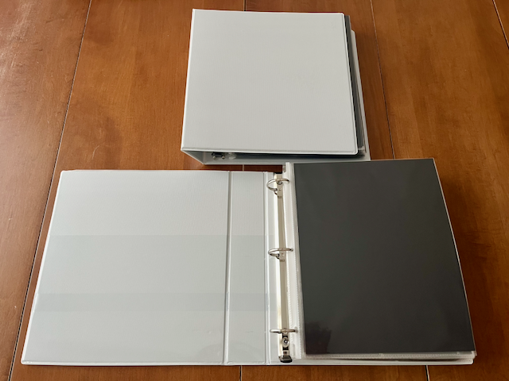

If you’ve done a few races—triathlons, marathons, cycling events, or anything in between—you eventually face the same question: What do I do with all this stuff?
Medals. Bibs. Photos. T-shirts. Sometimes hats, wristbands, timing chips, or finisher tokens. Each race adds another layer of memories—and another physical object that needs a home (assuming you’re not one of those cold-blooded monsters who throw everything away).
The “Classic” Solutions
There are many popular and genuinely beautiful ways athletes store and display their race memorabilia:
- Toss everything in a drawer. Simple, but wasteful. Your memories are, ironically, forgotten in there, with no organization whatsoever. Marie Kondo does not approve.
- Medals on wall-mounted racks or hooks.
- Bibs framed or pinned, sometimes forming a full poster or even covering an entire wall.
- Race T-shirts turned into quilts or blankets.
- Shadow boxes with a medal, bib, and a photo from a key race.
{kind=link}
{kind=link}
{kind=link}
{kind=link}
These solutions deserve praise (well, except the drawer). They are visible and celebratory. Walking past a wall of medals or wrapping yourself in a race-shirt blanket is a daily reminder of effort, discipline, and progress. They also work very well as backdrops for social media videos, or as motivational tools in a home training space.
For many people, these displays are exactly right.
The Limitation No One Talks About: Space
The challenge is not quality—it’s scale.
The more races you do, the more space you need. More hooks for medals. More wall space for bibs. More room in the drawer of doom.
- Another medal means another hook.
- Another bib means another frame or wall section.
- Another T-shirt means another square of fabric or another drawer.
Either that, or you have to start making choices about which races deserve to be displayed.
If you race for years (or decades), the collection grows—but your walls and closets do not.
I don’t live in a mansion. I don’t have unlimited wall space. And I don’t want my entire home to turn into a race museum. More importantly, I don’t want my memories scattered across different rooms and storage boxes.
What I Actually Want From Race Memories
What I care about most is context. Not just “This is the medal”, but:
- When was this race?
- Where was it?
- How did it go?
I like having the medal, the bib, a few photos, and race stats all together. In one place. Easy to revisit.
My Solution: Scrapbooks
Instead of expanding outward onto walls, I went inward.
I create race scrapbooks.
Each scrapbook holds multiple races, and each race gets its own dedicated spread with all or most of the event memorabilia.
Everything is close together, chronological, and compact.
I can flip through years of racing in minutes, reliving entire seasons without needing to move furniture.
And if I want even more details and context, I can come into this blog and look at all the details, photos and stats.
What I’ll Show in This Post
In the rest of this post, I’ll include:
- Photos of my completed scrapbooks
- The materials I use (nothing fancy or expensive)
Below are the main sections I’ll expand with photos and details.
Materials I Use
Let me start by saying that you cna use whatever you want ot build a scrapbook. Definitely you can make the final product look much nicer and more polished. I just priotitized practicality over esthetics-at least for now.
The goal is to create spreads for each race. Each spread will contain memorabilia from that race: the race, the bib, results, some photos, etc. Whatever we have and we can fit.
Support
As a support for the scrapbook, I choose some basic binders. I use these rather than fancier stuff because I already had a few around, they are cheap, and if I need more I can easily get some identical -I love tho see identical soines in the book shelves once done-.
 Pages
The spreads are made using two different types of plastic sleeves. One type has a single large compartment, which I use for big items like bibs or larger photos. These are standard school or office binder sleeves.
The other type has six smaller compartments and is usually sold for coin collecting. These are perfect for medals, race stats, or smaller items. You can find them in many formats, but I’ve found the six-slot version works best.
One important note: choose sleeves with flaps. I’ve used open pockets in the past, and items constantly slipped out unless I fixed them with adhesive dots—which quickly became messy. With flaps, you just close them and everything stays in place.
Other items
The rest is all small stuff. I use 5X8 glossy photo paper to print my photos, some black sheets of paper as background, sticky dots if I need to attach photos to paper, a white pen to write stuff, and that’s all.
{kind=link}
All in, I can fit about 30 spreads in a binder—roughly 30 races. When I lived in the UK, that might have covered only a couple of years, since you could enter a 10K for £20. Now that I live in Canada, it will last much longer, as racing is significantly more expensive.
Overall, each scrapbook costs me around 60CAD. That’s not bad when you compare it to the cost of a single shadow box (~30CAD), especially considering how much memory I can pack into a very small physical space.
How I Assemble a Race Spread
There are small variations between races, but in general I keep each race to one or two pages, depending on how much memorabilia I have.
Another factor is simply what I collected: a medal, a bib, photos, or all of the above. Once I know that, I just slot everything into place. Below is a few examples.
{kind=link}
{kind=link}
{kind=link}

Some races are special. The World Championships, for example, deserved a multi-page spread.
{kind=link}
{kind=link}
{kind=link}
{kind=link}
{kind=link}

{kind=link}
{kind=link}
Scrapbook cover and storage
For the cover and spines of the scrapbook I simply create a composite of all the bibs or medals pictires for tha races contained in that specific book. The bonus is that it doubles as a visual table of content.
{kind=link}
For storage, I keep the scrapbooks in my library, on an IKEA Kallax unit.
{kind=link}
Shadow boxes
Some races are special and deserve to be displayed. What makes a race special is a personal choice. For me, that usually means podium finishes or Age Group World Championships.
For those races, I still create a full scrapbook spread with the bib, stats, and finisher medal. On top of that, I also make a shadow box for the podium or championship medal, along with a photo from the race or podium.
{kind=link}
{kind=link}
Digitalization
Finally, I keep a record of all my races in this blog, in the races section. Here I add much more photos and context, including subjective feedback and links to detailed race analysis.
Wrap up
FFor me, scrapbooks strike the right balance between detail and emotion, while staying compact.
They let me keep racing memories together, rather than spread across walls, drawers, and boxes.
That doesn’t mean everything disappears into a book.
Some races still deserve wall space. Big milestones, standout performances, or particularly meaningful events are worth seeing every day. Race T-shirts still get worn—they’re made for training, not storage. And I’m perfectly fine with the trend of races reducing or eliminating finisher T-shirts, or at least making them optional. Not every memory needs to exist as fabric.
If you race often and want to keep your memories alive in a space-efficient way, this might be a solution worth considering.